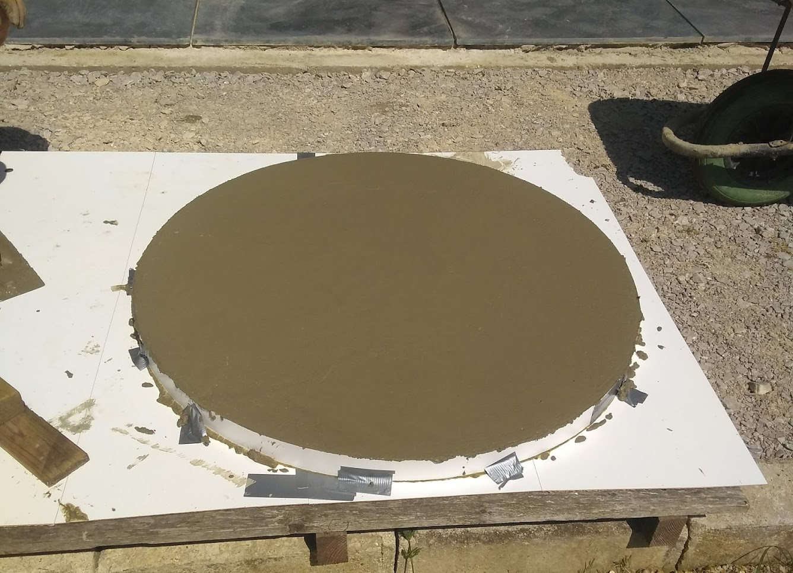
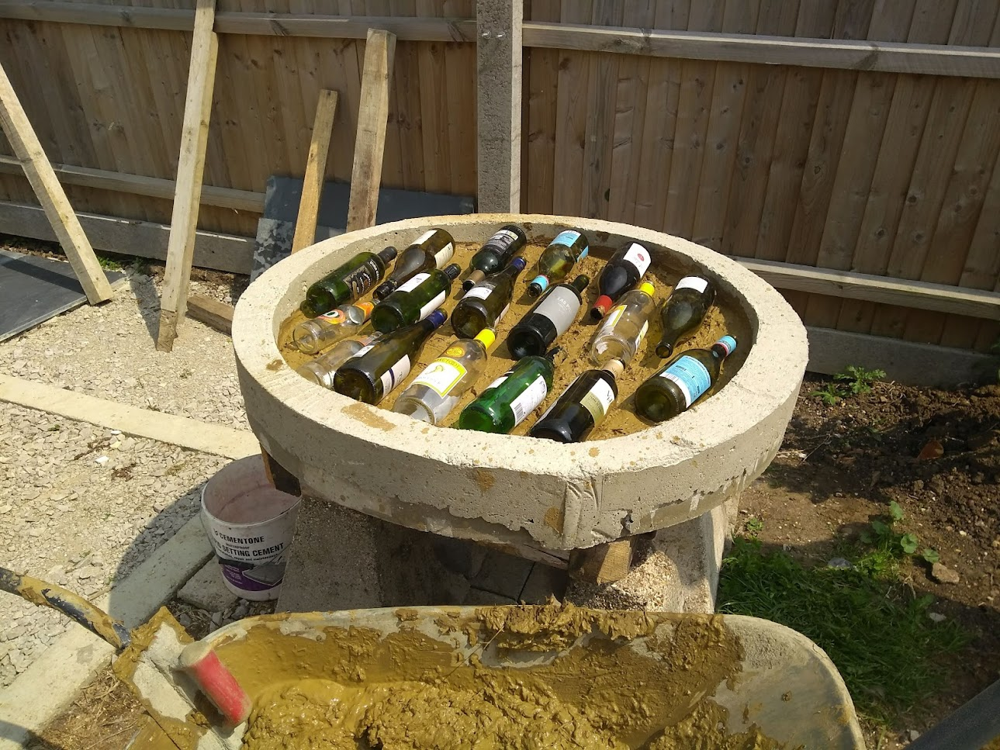
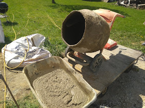
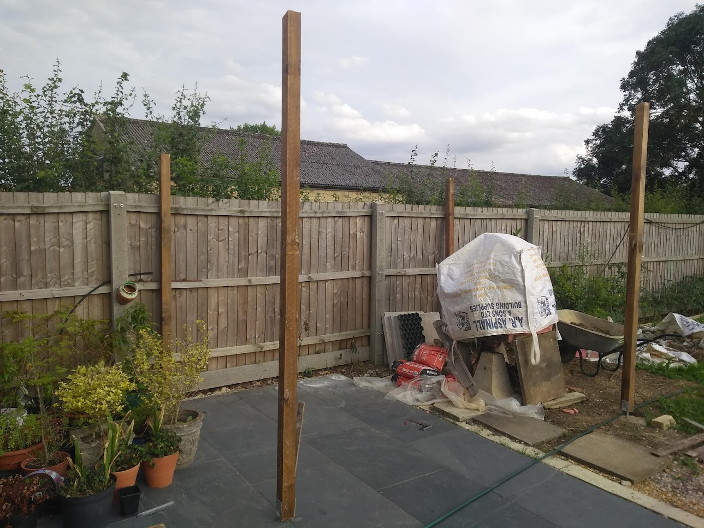
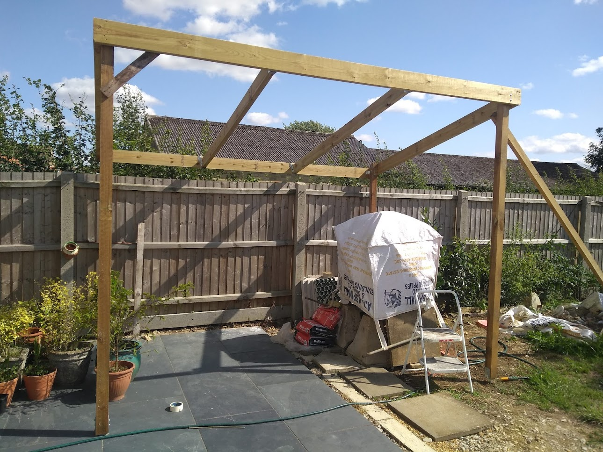
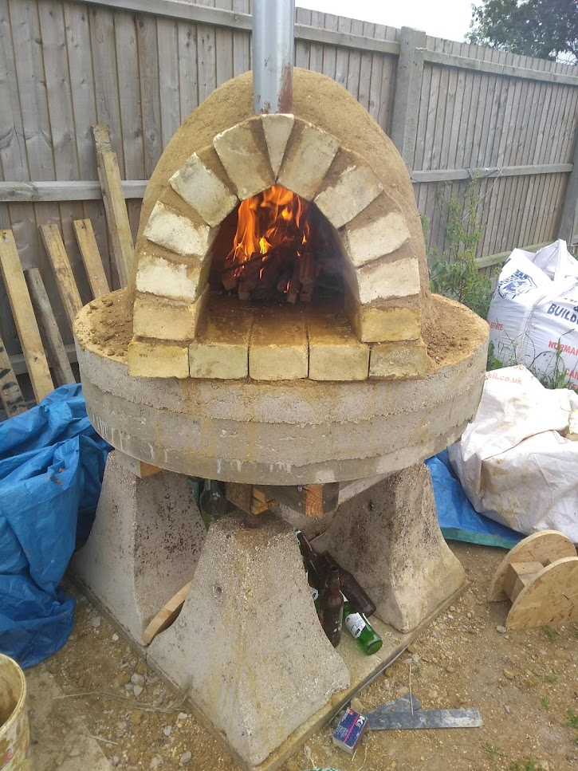

CONSTRUCTION PROJECT | PERSONAL
JUNE 2018 | 3 MONTHS
Design and construction of a wood-fired earth pizza oven capable of reaching temperatures of 400°C. The project involved thermal engineering calculations, material selection, and traditional masonry techniques to create a functional outdoor cooking facility.
The oven features a brick firing chamber, insulation layers, and a chimney system designed for optimal heat retention and airflow. The project combined engineering principles with hands-on construction skills to create a lasting structure for outdoor cooking.
Gallery










